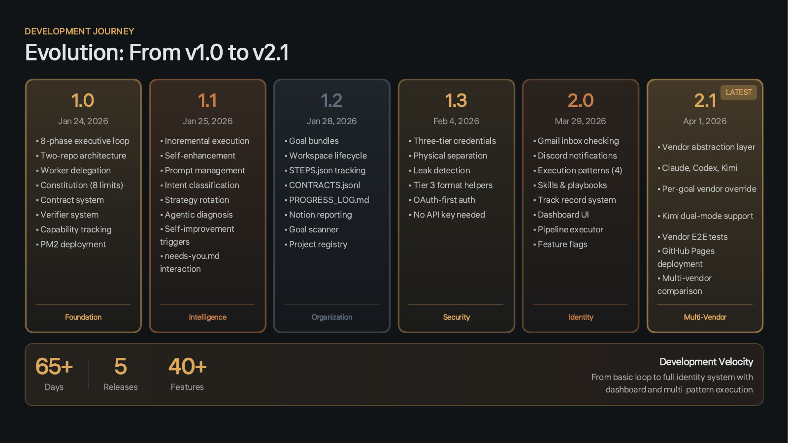
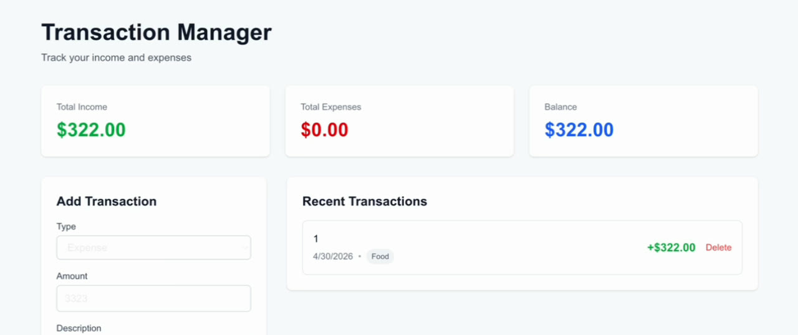
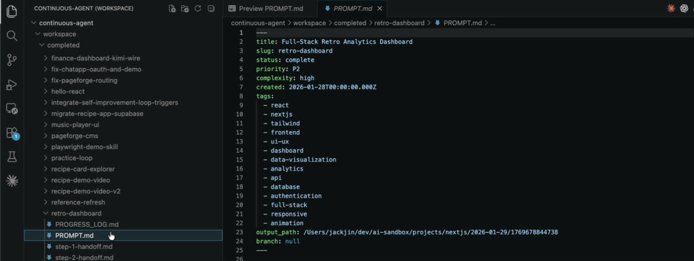
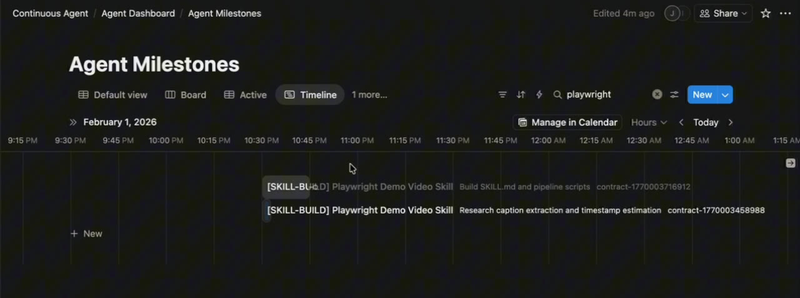
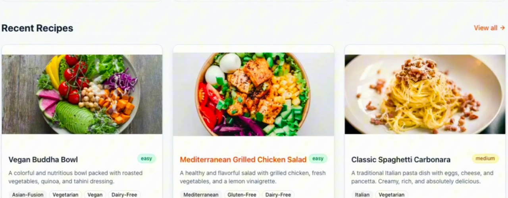
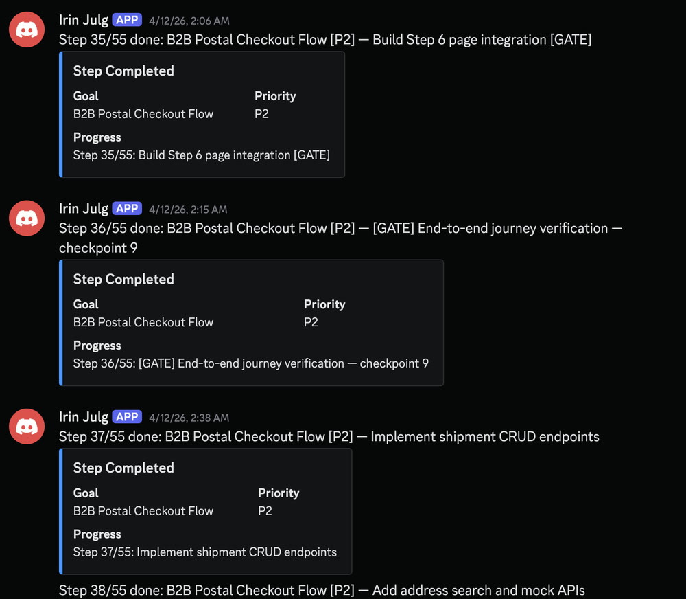
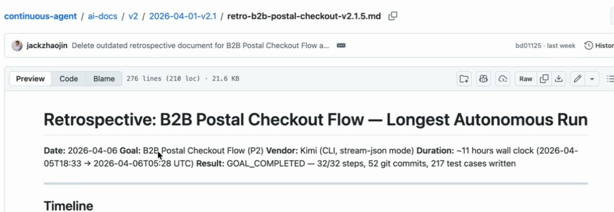

The walkthrough is the main video. It goes release by release, and so does this page. Every part links to its moment in the video if you'd rather watch.
Code: continuous-agent at v2.1.4 (0717635), tagged the evening before the talk. Deck: 15 slides, in the repo. I gave the talk at AI Tinkerers Columbus on April 6, 2026, and it was featured in AI Tinkerers' global Community Spotlights, picked from hundreds of demos. First published on LinkedIn on April 5, 2026. Rewritten for this site in October 2026.
1. A harness still needs you to start it
Before we talk about 24/7 agents, we have to talk about harnesses. A harness is a layer on top of a coding agent that puts the prompts in for you. If you do spec-driven development, you end up typing the same prompts over and over in the same pattern, and at some point you think: if only the AI would put in the prompts for me. That's a harness. I wrote about how I build them in January.
At the talk I asked the room three questions. Who has done spec-driven development? A good number of hands. Who has built a harness they're happy with? Two or three. Who has put that harness in a 24/7 loop? One hand. Everyone starts on the left: ad hoc prompting, then specs, then skills, then harnesses to build great things. I wanted to see what comes next.
I had three reasons to go past a harness:
- I still have to start it. The harness might do very meaningful work, and it's probably where the sweet spot is, but I still put in the prompt packet and kick it off.
- Nothing runs back to back. If I have five harnesses to run, I start every one of them myself.
- Logging and observability are on me. Tracking how a run is going and managing everything the harnesses produce is my own due diligence, with no central place for it.
So I built my own claw, an always-on agent in the spirit of OpenClaw, focused on 24/7 development. In the video I call it my AI dark factory: a claw that keeps coding and building around the clock.
Watch this part0:27 Harnesses first1:09 Three reasons to go further0:00 The three questions, live
2. An executive loop, separate workers and two repos
The agent has three layers.
The first is the executive. It mixes deterministic and agentic parts. PM2, the Node process manager, keeps it alive. A TypeScript loop runs the same phases on every iteration: check the inbox, health check, process my inputs, select work, break it down, execute, validate, update state, diagnose and escalate. The decisions inside those phases, like which goal is next, how to split it and why a build failed, are agentic. They live in executive skills that used to be prompt files.
I didn't expect that much deterministic code. I ended up with a crazy amount of TypeScript, because I wanted things done my way rather than left to the agent. I think everyone building agents and harnesses ends up mixing the two.
The second layer is the workers. Very early on I decided the worker would be separate from the executive, with its own instructions and its own skills. Think of a management team and a working team. The workers are good at coding. Reports, retrospectives and escalations flow back up to the executive.
The third is two repos. The agent itself lives in continuous-agent. Everything the workers build goes into a second repo, ai-sandbox, filed by day and project type. The agent's constitution says workers never write to the agent's own codebase. Keeping every project means I can go back later, fire it up, see how the build went and run a retrospective on it.
![Hand-drawn diagram, Continuous Coding Agent v2.1 System Architecture. Executive Brain: Phase 1 health check, Phase 2 human inputs from needs-you and the queue, Phase 3 work selection P0 to P4, Phase 3b goal breakdown into 2 to 5 steps, a prompt builder with a vendor adapter, skills and rules, goal bundles, and state and ledgers in Notion, Discord and work-ledger.jsonl. Worker Execution: Phase 4 worker spawner with a vendor registry sending work to the Claude Agent SDK, the OpenAI Codex SDK or Kimi K2.5, all writing to the ai-sandbox output monorepo with GitHub Pages deploy. Feedback Loop: Phase 5 validation, a strategy selector on failure, Phase 7 agentic diagnosis after three failures, Phase 8 block to needs-you.md after ten. Notes: runs 24/7 via PM2, and the two-repo architecture.](images/architecture.jpg)
Watch this part2:32 The three layers1:05 All that TypeScript, live1:50 A management team and a working team
3. A failing goal retries, gets a diagnosis, then asks a human
The bottom row of that diagram matters most when nobody is watching. After a worker finishes, Phase 5 runs deterministic verifiers against the worker's output folder: does it build, and are the definition-of-done items there. A failure is counted, and the goal goes back into the loop. The retry prompt tells the worker which attempt it is on, what the last error was, and that it must try a different approach. The approaches themselves live in a strategy bank in strategy-selector.ts: scaffold first, minimal manual setup, copy a working example, decompose the problem and a few more.
From the third failure, Phase 7 runs an agentic diagnosis. A model reads the failure and returns a root cause, a suggested fix, and whether to retry or escalate. At ten attempts, the limit in the agent's constitution, Phase 8 blocks the goal, writes it to needs-you.md and sends a Discord message. Then the loop moves on to the next goal. This is the failure path in the code I demoed:
// === PHASE 7: AGENTIC DIAGNOSIS (after 3 failures) === if (retry.attempts >= 3) { logAgentic('PHASE 7: Agentic Diagnosis (Investigate Failure)'); … if (diagnosis.escalateToHuman) { logAgentic(' Decision: Escalate to human (needs-you.md)'); … return 'work_failed'; } if (diagnosis.shouldRetry && diagnosis.suggestedFix) { logAgentic(' Decision: Apply suggested fix and retry'); … return 'work_failed'; // Will retry next iteration } logAgentic(' Decision: Continue normal retry logic'); } // === PHASE 8: MAX RETRIES REACHED === if (retry.attempts >= MAX_RETRIES) { logDeterministic('PHASE 8: Max Retries Reached (Constitution Limit)'); … await writeToNeedsYou(workItem, retry.attempts, retry.lastError, contractId); … return 'work_failed'; } // Continue retrying return 'work_failed';Four things can happen to a goal on that path. Pick one to see the attempts it takes and the log the executive writes along the way, using the code's own messages. The fourth is an edge case I found reading the code, and the one worth knowing if you build a loop like this: the limit only fires when the diagnosis has no fix to offer.
Failed attempts on this goal
failed, retried with a different approachfailed, diagnosis ranfailed, diagnosis suggested a fixpassed
Blocked after 10 failed attempts, the limit in the constitution. The goal goes to needs-you.md, Discord pings me, and the loop moves on to the next goal.
What the executive logs
PHASE 6: Update State (Failure) Attempt 1/10 failed PHASE 6: Update State (Failure) Attempt 2/10 failed PHASE 6: Update State (Failure) Attempt 3/10 failed PHASE 7: Agentic Diagnosis (Investigate Failure) Decision: Continue normal retry logic # attempts 4 to 9 repeat the same pattern PHASE 6: Update State (Failure) Attempt 10/10 failed PHASE 7: Agentic Diagnosis (Investigate Failure) Decision: Continue normal retry logic PHASE 8: Max Retries Reached (Constitution Limit) Marking as blocked after 10 attempts
executive-loop.ts at 0717635; the goal and the diagnosis answers are made up. Purple lines are agentic, light lines are deterministic.Two details are worth knowing if you build something similar. A diagnosis that suggests a fix returns before the ten-attempt check, so a goal keeps retrying past ten as long as the diagnosis keeps finding fixes. And the attempt count is written to STEPS.json, so a PM2 restart doesn't reset it.
When the agent needs me, it writes to workspace/needs-you.md: a table with the action, why it can't do it, and a column for my response. I answer with [APPROVED], [DECISION], [INFO] or [SKIP], and the deck says it picks that up within about 30 seconds. The constitution sets the hard limits around all of this.
![Deck slide, Safety and Intelligence: Key Systems. The Constitution: eight immutable hard limits in workspace/constitution.md that the agent cannot override, enforced at the deterministic layer: no spending beyond $20 per month per service, no permanent deletions, no external publishing without approval, no credential exposure, no access control expansion, no output in the agent codebase, all activity must be logged, ten retries minimum before blocking. Human Interaction through workspace/needs-you.md with APPROVED, DECISION, INFO and SKIP responses. A retry system with strategy rotation: simplify scope, research first, break into subtasks, different tools.](images/slide-safety.jpg)
Watch this part16:12 The diagram from the talk
4. v1.1 and v1.2 set up turn-by-turn logs and a workspace for prompt packets
I do believe the 24/7 agent makes a lot more sense if we start from the beginning. The git tags give the timeline: v1.0 on January 24, v1.1 on January 25, v1.2 on January 28 and v1.3 on February 4.

The beginning has humble roots. After many tries over two days, the agent produced a fairly simple app that works: a transaction manager where you add and remove transactions, saved in local storage so a refresh doesn't lose them. A very straightforward proof of concept.
What it set up mattered more than the app. From the very first days I logged every worker's interaction with the Claude Agent SDK turn by turn, for every worker task, and kept track of what the executive was doing too. So there was observability at the executive level, the worker level and the turn level: exactly what went in and exactly what happened. Since v1.1, my AI and I have been able to use that history to improve how workers do things.
v1.2 brought the workspace. Work moves through workflow states (drafts, on deck, in progress by priority, completed), with templates so the AI or I can write input packets. I don't think of prompts when building something 24/7. You don't give it a simple prompt; you give it a prompt packet, a large set of material to build from over a long time. Every completed goal keeps its steps, its progress log and its handoff documents.
The other big feature of v1.2 was Notion. Agents build through the night while I'm sleeping, and Notion gives me something readable instead of digging through executive logs and ledgers. That early version was still buggy, and I didn't have good work classifications yet.



Watch this part3:56 From the beginning4:51 Turn-by-turn logging5:32 The workspace6:36 Notion
5. v1.3 split credentials into three tiers and made its own demo video
v1.3 was the hardening sprint, and the first version that worked in a somewhat secure manner. I realized my credentials were mismanaged. I never committed them to git, but they were intertwined across everything I was building. Now there are three tiers. The executive has its own credentials. The workers, the ones doing the building, have theirs, for example the keys a Codex or Anthropic worker needs. The apps have a third set. The deck adds that the tiers are physically separate files, and the spawner checks on every run that executive keys never reach a worker.
For apps that need a database, the rule is one Supabase database with a separate schema per app. If I build 60 apps with this agent, I'm not creating 60 Supabase accounts or upgrading my databases.
Something I thought was really cool came next. By then the agent had finished seven or eight projects, and I needed a way to have them demoed back to me. So the agent built a Playwright demo skill, and a worker used it to make a narrated video of the recipe app it had built. I didn't make that video. My prompt packet said I wanted a video at the end of the project, with the bugs fixed while the demo was being generated, and the AI did all of that with a skill it built for itself. Not every day do we have something that's arguably self-improving and then actually works without human intervention. I wrote about the Playwright demo pattern on its own as well.

Watch this part7:11 Three credential tiers8:58 The demo video skill
6. v2.0 gave the agent her own accounts, skills and a dashboard
After v1.3 the repo went quiet from early February to late March, until I picked it back up for the AI Tinkerers talk. v2.0, tagged March 29, is a fairly large release, with three big parts.
First, identity. The agent now has her own Gmail account, her own Notion space and her own Discord account, so she can message me whenever it makes sense. Checking her inbox is Phase 0.5 of every loop, so I can send her goals by email, and she posts completions and blocks to her Discord.

Second, skills. In v1.2 and v1.3 I kept rewriting prompt markdown files, at one point around 40 of them, and it felt really awkward. By then I was using skills heavily in my day job and all my other AI projects. So v2.0 took the prompts out and moved them into skills, split into executive skills and worker skills. Letting the AI choose its skills is what makes it more agentic.
Third, something visual. Reading log files and ledgers in the codebase was always a pain. The v2.0 dashboard still reads the same markdown files locally, with some deterministic logic on top: is it running, is it doing anything, is it blocked, what's blocked, what needs me.
Not everything worked on stage. The executive validation loop was the part not working as well as it should, and the Discord notification I expected live during the talk didn't fire. I kept that moment in the recording.
Watch this part10:21 Agent identity11:07 Skills instead of prompt files12:05 The dashboard3:46 What wasn't working, live
7. v2.1 added Codex and Kimi K2.5 workers and took on a much bigger build
Right before the talk I started to worry about how long I could keep running Agent SDK workers on my Claude subscription. So the two biggest features of v2.1 were OpenAI Codex and Kimi K2.5 as alternative workers. A vendor registry puts them behind one interface. A goal can name its vendor in its PROMPT.md frontmatter with worker_vendor, or the WORKER_VENDOR environment variable sets it for everything.
How do you make skills work across vendors? I chose not to write separate skills for each one. Instead, each vendor gets a pre-prompt that puts it in the mindset of that agent. I'm a huge Claude person. Kimi K2.5 is a lot cheaper, and its subscription goes a very long way in agentic coding.
To show it off, I fed the exact same prompt packet, a personal finance dashboard, to Claude, to Codex, to Kimi K2.5 through its Wire SDK and to Kimi K2.5 through its CLI. One prompt packet, built four ways. With a harness I'd have to run each of those myself. With the 24/7 agent I just put in the prompt packet and it runs them. I did the Kimi Wire integration for the richer agentic interaction, but the CLI is what I went with going forward.
![Deck slide, Multi-Vendor Worker Support. Three vendor cards: Claude, the default, on the Claude Agent SDK with an OAuth token, score 88 of 130, third place; OpenAI Codex on Codex SDK threads with codex login, score 115 of 130, first place; Kimi K2.5, dual mode with Wire SDK and CLI, scores 92 for the CLI in second place and 87 for Wire in fourth. Below: the same prompt, build a finance dashboard, run across all four vendor modes, deployed at jackzhaojin.github.io/ai-sandbox, with per-goal vendor override in PROMPT.md frontmatter, a normalized AgentWorkerMessage format, end-to-end vendor tests and a GitHub Pages deployment pipeline.](images/slide-vendors.jpg)
Then I wanted to really challenge it. Instead of a dashboard that takes two or three steps, something that would take 20, 30, 50 steps to finish: a build I had done myself in my early days of spec-driven development, which took me around 40 hours. The goal was a B2B postal checkout flow, and the vendor was Kimi K2.5 through its CLI.
The first try did really badly. The retrospective says it plainly: the executive re-broke the goal from 6 coarse steps into 32, the worker built more than 40 components and wrote 217 test cases, and the result was an assembly of parts, not a working end-to-end application. The screens looked decent, but they weren't wired to a database, and I had to step in twice to fix bugs in my own code.

It was really good at testing each of the seven screens of the flow on its own, and it never tested end to end, because I never told it to. So instead of fixing the output that night, I tossed the whole thing and had it run again. That's the mentality I'm learning from all this: instead of perfecting the output, you perfect the input, or you perfect the harness. If you think you're only 80% there, throw the output away.
The second run, on April 11 and 12, was much better. It ran longer, it built a lot more, and it did a lot more end-to-end testing, with integration gates inserted every few steps. It finished 55 steps with no human intervention, and the database shows plenty of rows inserted by its tests. It still didn't work end to end as a demoable product. We're making progress, though, and Kimi K2.5 performed fairly well as a worker on both runs.
Watch this part12:45 Codex and Kimi K2.514:16 The bigger challenge2:42 One pre-prompt per vendor, live4:34 Perfect the input, live
8. After the talk, harnesses run inside the agent
Before, harnesses and the 24/7 agent were two separate things. After the talk I merged the frameworks into one harness CLI, released as v2.2 on April 12. Harnesses are now defined once, and I can run one inside the 24/7 agent as a goal's execution pattern or on its own. According to the changelog, that release brought three harnesses (a generic one, an Edge Delivery site builder and a study harness) and 105 passing tests.
# on its own
npm run harness -- --name <name> --prompt <path>
# inside the 24/7 agent, in the goal's PROMPT.md frontmatter
execution_pattern: harnessBefore this, my harnesses only worked on Claude. Now they also run on Kimi K2.5, because the multi-worker support carried over. Harnesses are probably what's actually useful in a productive sense. This is a tinkering project, so the 24/7 agent gets the attention.
Watch this part17:10 Harnesses inside the agent
9. Questions from the room on long runs, testing and getting better
AI Tinkerers recorded the live talk on April 6: five minutes of me talking really fast with 15 tabs open, then questions. The answers cover things the walkthrough skips.
What's the longest problem you've had it work on?
I told the room the longest I'd run it was nine hours. You get there by giving it an overly complex task, with a database layer and a UI layer, something extremely time intensive, and trusting the executive to break it down. The executive loop is very deterministic, but interpreting a task and splitting it into 30, 40 or 60 tasks is agentic. A bigger task comes from a bigger spec package. At that point it's not even a prompt anymore; it's way bigger than the context window.
How long did you spend on the specification?
Less up front than some approaches people publish. I size the work by turns. I aim for about 60 turns per task, each task has a 200-turn cap, and each one gets an hour. For the run that week I had to restart, because the tasks weren't refined enough, took over 200 turns and failed. And unlike a harness, I want higher priority work to come in first and cut ahead of other tasks.
Do you test the individual pieces or the whole flow?
Both, at the executive level and the worker level. I really messed up in that iteration: I had end-to-end testing at the module level, but not the whole flow. The executive needs a process for it, and workers need to test the whole flow, not just the thing they're building. Just like real life, you need the management rigor and a team that knows what it's doing. It costs more tokens, and maybe that's what I have to do for now.
How do you keep the agent online overnight?
Being transparent, my harness is better than my 24-hour agent right now, and I'm not doing a good job of keeping the agent online. It's open source because Robb Winkle, who runs AI Tinkerers Columbus, asked me to open source it, and the code is out there for anyone who wants to try it.
How does it get better?
I literally do a retrospective with my agent: what was done correctly and what could be done better. That feeds into the input, so the prompt packet gets more detail and runs get more consistent, and into the executive and worker skills. My first version had zero skills. Now I'm all in on skills. If a skill isn't right, we fix it, so next time the AI has a better idea of what it's doing.
Watch this part5:58 The longest run7:17 Sizing work by turns8:33 Testing the whole flow9:25 Keeping it online10:15 Retrospectives into skills
10. Build harnesses first, and what came after v2.1
My advice at the end of the talk: if you want to go on this journey, build harnesses first. Then put one in an endless loop. You still talk to your harness; a 24/7 loop means the harness talks to you. Harnesses are probably the sweet spot for professional work. The 24/7 agent is for fun.
The roadmap I showed in April had three stops. 2.4 would be a hardening sprint from the retrospectives. 3.0 would add a cloud database, so I don't lose my ledgers, contracts and work if my laptop ever goes. 3.1 would double down on observability, with the 2.0 dashboard moved to the cloud and made way better.
In practice, v2.3 (April 18) gave every project its own worktree, and v2.4 (April 19) shipped the hardening from those retrospectives. v3.0 took a different turn: instead of a cloud database for logs, it became memory, a second brain the executive writes to and reads from before it acts. It shipped on May 31, and I wrote it up in Continuous Executive Agent V3.0: The Second Brain. That was also the last commit to the repo.
Let's connect if you're building anything agent powered, especially if you have an open-source repo to share. I learn more from conversations than from giving talks.
Watch this part18:19 The roadmap5:39 Build harnesses first, live